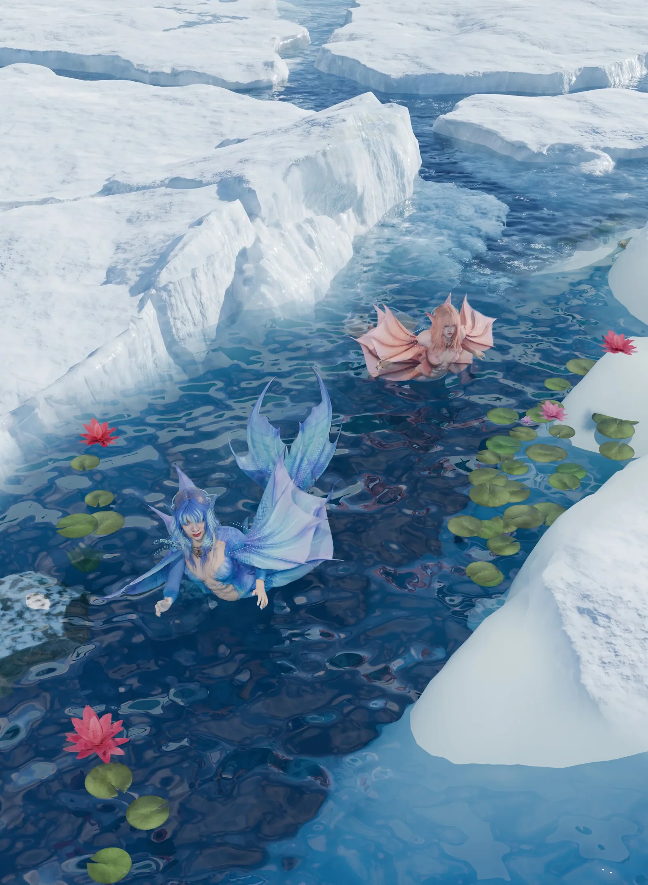
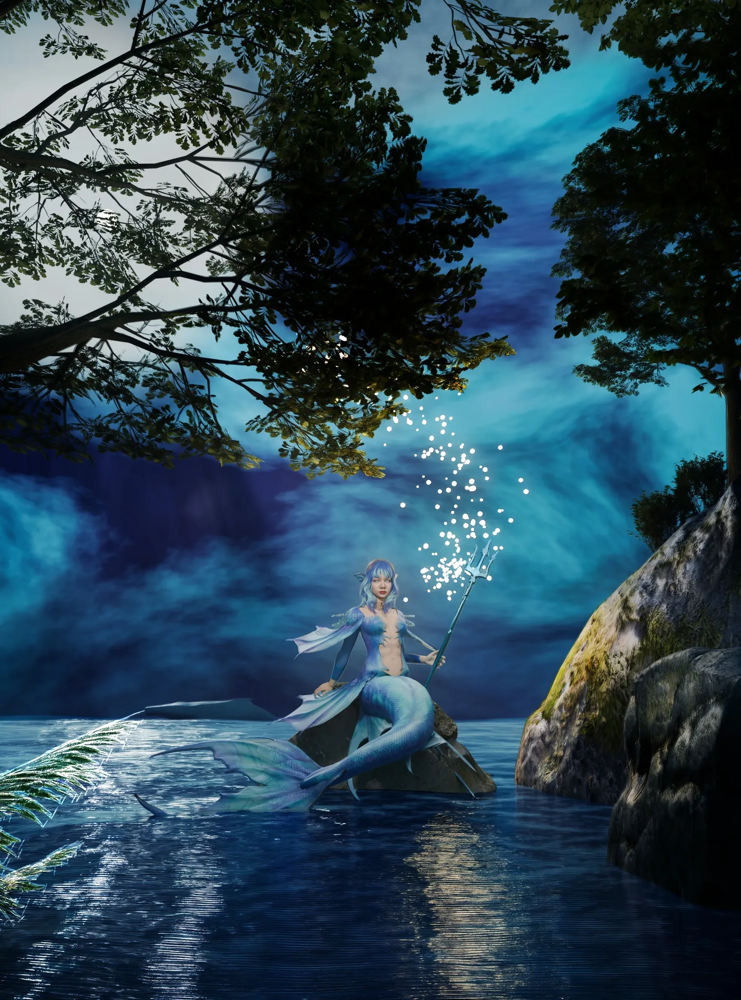

Khúc Hát Ru Của Đại Dương

Đại dương đón lấy Brann không phải bằng vòng tay êm ái của nước, mà bằng một cú quật tàn bạo.
Cảm giác như có ai đó vung cả một tấm phản gỗ khổng lồ giáng thẳng vào lưng cậu, ép sạch chút không khí cuối cùng ra khỏi lồng ngực trong một tiếng nấc nghẹn đắng. Ngay sau đó, bóng tối và nước ập đến. Cái lạnh của biển sâu kỳ dị đến mức không còn là một cảm giác trên da thịt; nó hóa thành âm thanh — một tiếng ù đặc quánh, nặng nề khoan thẳng vào hai màng nhĩ.
Thế giới phía trên lập tức tắt lịm như một ngọn nến bị bóp nghẹt. Tiếng gió rít gào. Tiếng vỗ cánh tuyệt vọng. Tiếng ai đó gào tên cậu giữa không trung. Tất cả đều đứt đoạn. Giữa khoảng không vô tận chỉ còn lại tiếng nước chuyển mình và nhịp tim đơn độc của chính cậu đang đập thình thịch trong lồng ngực.
Brann chìm dần.
Chiếc mũ lông văng khỏi đầu, xoay một vòng lười biếng trong dòng nước xoáy rồi mất hút. Tấm áo choàng phồng lên quanh thân hình cậu như một chiếc lá khô bị nhấn chìm xuống đáy ao. Thứ duy nhất vẫn bám trụ lại với cậu là cán búa. Những ngón tay chai sần của Brann vẫn siết chặt lấy nó trong vô thức. Người lùn vốn vậy — họ có thể quên tên một con đường, quên hình dáng một căn phòng, quên cả gương mặt của kẻ mới gặp hôm qua, nhưng ngay cả khi cận kề cái chết, bàn tay họ cũng không bao giờ buông rời cây búa của mình.
Phía trên đầu cậu, mặt biển giờ đây trông như một tấm kính xanh nhạt, nơi những vệt sáng cuối cùng đang cố rọi xuyên qua. Tấm kính ấy cứ xa dần, đổi màu theo từng thước nước: từ xanh ngọc sang lam thẫm, rồi chìm hẳn vào sắc xanh đen của vực thẳm. Brann ngước nhìn bầu trời rời bỏ mình, chậm rãi và xa xôi như thể ai đó đang nâng dần trần nhà lên cao.
Cậu không đạp chân, cũng chẳng buồn vùng vẫy. Một phần vì cơ thể đã kiệt quệ, phần khác vì lần đầu tiên sau chuỗi ngày dài đằng đẵng, cậu nhận ra chẳng còn thứ gì đang rượt đuổi mình phía sau — và bản thân cậu cũng chẳng còn mục đích nào để phải đuổi theo phía trước.
Một cánh hoa đỏ thẫm vừa tuột khỏi nếp áo cậu, lơ lửng giữa dòng nước. Có lẽ nó vẫn còn trôi dạt đâu đó phía trên kia, cậu thầm nghĩ. Rồi mọi ý niệm trong đầu cũng tắt lịm.
Cái lạnh dưới đáy biển khác hẳn cái lạnh trên đỉnh núi. Gió núi mang theo những lưỡi dao sắc lẻm, tàn nhẫn luồn qua cổ áo để cắt vào da thịt. Còn cái lạnh của đại dương lại mang hình hài của sự tĩnh lặng. Nó không cắn xé. Nó chỉ bao bọc lấy con người ta một cách kiên nhẫn tuyệt đối, lặng lẽ đợi cho đến khi chút hơi ấm cuối cùng tự khắc buông xuôi.
Brann thở hắt ra một tràng bọt khí. Những hạt bong bóng tròn xoe nối đuôi nhau bay lên, ngoan ngoãn tìm về phía ánh sáng — nơi mà cậu không còn cách nào chạm tới được nữa.
Đột ngột, dòng nước chuyển mình.
Cậu không còn rơi thẳng xuống đáy vực. Một hải lưu ngầm lạnh buốt bất ngờ quấn ngang hông, cuốn phăng cơ thể cậu trôi dạt qua vùng nước tối đen như một chiếc lá mục trôi theo rãnh nước. Brann mặc kệ cho dòng chảy định đoạt. Tâm trí cậu lúc này còn đang bận ngạc nhiên trước một sự thật kỳ lạ: cậu hoàn toàn không thấy sợ.
Cho đến khi lưng cậu chạm phải một thứ gì đó mềm mại.
Không phải đá ngầm. Cũng chẳng phải rong biển. Brann nặng nhọc ngoái đầu lại.
Giăng ngang vùng nước tối là một tấm lưới khổng lồ được bện từ những sợi dây to bằng cổ tay. Mỗi mắt lưới rộng bằng cả sải tay người lớn, trải dài sang hai phía đến tận nơi thị giác bị bóng đêm nuốt chửng. Thứ dây ấy mang một sắc màu kỳ quái — không hẳn là trong suốt, nhưng lại là một gam màu mà trí não con người không tài nào gọi tên. Tại mỗi nút thắt, một hạt châu nhỏ xíu đang tỏa ra thứ ánh sáng mờ ảo như ngọc trai.
Theo bản năng, Brann vươn tay chạm thử vào sợi dây gần nhất.
Nó ấm. Thứ hơi ấm duy nhất tồn tại giữa cõi nước lạnh lẽo như băng này.
Cậu giật mình rụt tay lại, nhưng đã muộn. Sợi dây khẽ khàng uốn mình, trườn một vòng quanh cổ tay cậu, dịu dàng và tự nhiên như cái nắm tay của một người bạn cũ.
Brann hoảng hốt giật mạnh tay ra. Vòng dây lập tức siết chặt lại.
Cậu bắt đầu quẫy đạp, vung búa đập loạn xạ vào khoảng không. Ngay lập tức, những mắt lưới xung quanh tự động thu hẹp lại. Tấm lưới không hề hung hãn hay vội vã. Cứ mỗi lần cậu vùng vẫy, nó lại siết thêm một nấc — vừa vặn bằng đúng lực kháng cự của cậu, không hơn, không kém. Nó điềm tĩnh như bàn tay của một kẻ săn mồi lão luyện đã làm công việc này từ thuở hồng hoang, thừa hiểu rằng con mồi càng giãy giụa thì càng chóng kiệt sức.
Ở những bến cảng phương Bắc xa xôi, đám thủy thủ vẫn thường rỉ tai nhau một lời răn bất thành văn trước mỗi chuyến ra khơi: Hãy ném vài đồng bạc xuống biển làm lễ, tuyệt đối đừng gọi tên Bà, và nếu chẳng may rơi khỏi mạn thuyền, đừng bao giờ giãy giụa. Người ta gọi nữ thần biển cả ấy là Rán. Bà không hẳn là kẻ ác độc. Bà chỉ giăng sẵn tấm lưới của mình dưới đáy đại dương, và bất cứ sinh linh nào rơi xuống biển đều nghiễm nhiên thuộc về tấm lưới ấy.
Một thợ rèn lớn lên giữa núi rừng như Brann dĩ nhiên chưa từng nghe qua lời răn đó. Cậu chỉ biết rằng dòng nước quanh mình lại vừa đổi hướng. Lần này, tấm lưới bắt đầu kéo cậu chìm thẳng xuống đáy vực.
Chậm rãi. Êm ái. Nhịp nhàng như cái cách một người mẹ vỗ về đứa con vào giấc ngủ ngàn thu.
Trên hành trình đi xuống cõi tối, Brann nhìn thấy vô số kỷ vật của những kẻ đi trước còn vương lại trên các mắt lưới: một chiếc ủng da đã mục, một mặt khóa thắt lưng bằng đồng phủ kín rêu xanh, một chiếc tù và uống rượu, và cả một chiếc chuông nhỏ buộc dây vẫn ngân lên những tiếng leng keng yếu ớt mỗi khi dòng nước lướt qua. Cả tấm lưới khổng lồ là một bảo tàng câm lặng lưu giữ những thứ người đời buộc phải bỏ lại khi bị thần chết mang đi.
Cậu cố lục tìm trong trí nhớ xem mình vừa bỏ quên thứ gì trên mặt nước. À, chiếc mũ lông.
Brann bật cười. Một tiếng cười không thành tiếng, chỉ hóa thành vài bọt khí vỡ tan.
Và chính trong khoảnh khắc buông xuôi ấy, cậu nhìn thấy nó.
Ở rìa tầm mắt, nơi bóng tối đặc quánh của đáy biển loãng ra thành một vùng sương xám nhợt nhạt, có một dải màu trắng khổng lồ uốn lượn vắt ngang đáy vực. Thoạt nhìn, Brann ngỡ đó là một dãy đồi ngầm. Nhưng khi bị kéo lại gần hơn, cậu nhận ra những đường cong trắng xóa ấy được xếp đặt theo một nhịp điệu kỳ lạ: từng thanh một, song song và đều đặn, hệt như khung xương sườn của một cự thú đang nằm nghiêng say ngủ.
Ở điểm tận cùng của dãy xương sườn ấy là một khoảng trống tròn trịa, sâu hoắm.
Một hốc mắt.
Hốc mắt rỗng không ấy rộng lớn ngang ngửa một đại sảnh đường của người lùn. Từng đàn cá phát sáng bơi lượn ra vào bên trong hộp sọ khổng lồ, lập lòe như ánh đèn hắt ra từ khung cửa sổ của một tòa lâu đài đã bị lãng quên từ vạn cổ. Phía dưới, khung hàm xương vươn dài, cắm phập những chiếc răng nanh to hơn cả cột buồm xuống lớp bùn đen đặc, sừng sững như những cột mốc biên giới của một vương quốc cổ đại đã diệt vong.
Brann ngừng hẳn việc giãy giụa.
Cậu chợt nhớ lại câu chuyện từng nghe trong một đêm bão tuyết năm nào. Người kể chuyện đã nói rằng, có một con mãng xà khổng lồ quấn trọn lấy thế gian, tự ngậm đuôi mình mà ngủ vùi, và cả đại dương mênh mông này chẳng qua chỉ là chiếc nôi của nó. “Ngày nào con rắn ấy nhả đuôi ra,” người đó đã thì thầm bên bếp lửa, “bầu trời sẽ sụp đổ.” Ngày ấy, Brann đã phá lên cười và bảo đó là chuyện bịa đặt của đám bợm nhậu.
Giờ đây, đối diện với cái hốc mắt trống rỗng to bằng cả tòa thành kia, nụ cười của cậu đã tắt hẳn.
Nếu con mãng xà trong truyền thuyết từng thực sự quấn quanh thế giới… vậy thì kẻ nào đã đủ sức gỡ nó ra và biến nó thành bộ hài cốt dưới đáy biển này?
Câu hỏi lơ lửng giữa tầng nước lạnh lẽo, chẳng có lấy một lời hồi đáp. Brann biết có những bí mật trên thế gian chưa đến lúc được phơi bày. Cậu nhìn trân trân vào dãy xương trắng xóa cho đến khi hai mắt cay xè, rồi bất chợt, một luồng buốt giá chạy dọc sống lưng.
Cánh tay trái của cậu đang phát sáng.
Dọc theo cẳng tay, những cụm nấm màu trắng xám đang tỏa ra thứ ánh sáng dịu nhẹ như ánh trăng non, những sợi tơ nấm lấp lánh trong nước tựa bụi phấn tiên. Giữa bóng tối của vực thẳm, vết nguyền rủa ấy trông gần như có chút gì đó đẹp đẽ. Brann bỗng thấy nực cười với suy nghĩ của chính mình.
Ánh sáng từ những cụm nấm yếu dần đi. Hoặc cũng có thể, đôi mắt của cậu đang dần khép lại.
Tấm lưới của thần Rán lại siết nhẹ thêm một vòng. Lần này, Brann hoàn toàn phó mặc.
Bỗng nhiên, có âm thanh gì đó vọng tới.
Không phải tiếng rền rĩ của dòng nước sâu. Đó là tiếng lách tách của một tràng bọt khí vừa vỡ tung, nối tiếp bởi hai giọng nói bị làn nước bóp méo, đang thì thầm với nhau đầy vẻ gấp gáp:
“—Thật mà! Lưới của Bà vừa động đậy!”
“Chị nhỏ tiếng thôi chứ!”
“Đã ba mùa trăng rồi… tròn ba mùa trăng mới lại có người rơi xuống!”
Brann gắng gượng hé mở đôi mí mắt nặng trĩu như đeo đá. Qua khe mắt mờ đục, cậu thấy hai bóng hình thon thả đang rẽ nước lao về phía mình, đôi đuôi cá dài phía sau quẫy nhẹ, mềm mại như hai dải lụa sống. Một chiếc đuôi mang sắc xanh lam sắc lạnh như ánh thép dưới trăng, sẫm dần về phía vây thành màu nước vực. Chiếc đuôi còn lại mang sắc hồng san hô, dịu dàng như ráng sớm trên mặt sương và ấm áp như vỏ sò vừa phơi nắng.
Nàng tiên cá đuôi xanh trườn tới trước. Làn da cô ánh lên sắc lam nhạt nhẵn mịn như men sứ, mái tóc màu xanh băng xõa dài sau lưng tựa làn khói hòa vào nước. Hai bên thái dương và dọc theo cánh tay cô là những dải vây mỏng tang, trong suốt như cánh chuồn chuồn, khẽ rung rinh theo từng nhịp nước. Ngay cả khi đang bơi, chiếc cằm của cô vẫn kiêu hãnh ngẩng cao. Cô lướt nhìn Brann từ đầu đến chân, dừng lại khá lâu ở bộ râu rậm rạp, rồi nghiêng đầu đánh giá cậu hệt như một thương nhân đang định giá món hàng lạ.

Cô gái đuôi hồng bơi tới chậm hơn một nhịp. Làn da cô ửng hồng màu quả đào chín, mái tóc mềm mại mang sắc san hô ngâm trong sữa tươi, những cánh vây mỏng nơi vành tai và cổ tay cũng phơn phớt sắc hồng phấn chuyển dần sang cam nhạt ở chóp đuôi. Cô có đôi mắt rất to, nhưng dưới mi mắt lại vương một quầng tối mờ nhạt — dấu vết của những đêm dài thức trắng đến mức bản thân đã quên mất cảm giác mỏi mệt là gì.
“Tay chàng ấy đang phát sáng kìa,” cô gái đuôi hồng khẽ thốt lên.
“Còn sống mà lại phát sáng. Kỳ quặc thật.”
“Chàng ta có râu.”
“Rất nhiều râu là đằng khác.”
Hai chị em quay sang nhìn nhau, rồi đồng loạt gật đầu cái rụp như vừa thống nhất xong một quyết định vô cùng hệ trọng.
Cô gái đuôi hồng rút từ mái tóc mình ra một mảnh vỏ sò uốn cong như trăng lưỡi liềm, rìa vỏ sắc bén đến mức dòng nước trôi qua cũng phải tự tách làm đôi. Cô đưa lưỡi dao vỏ sò áp sát vào sợi dây đang trói chặt cổ tay Brann.
“Thứ lỗi cho chị em con nhé, bà Rán,” nàng đuôi xanh chắp tay thì thào vào bóng tối. “Chúng con mượn người này một lát thôi. Sẽ trả lại cho Bà sau.”
Tấm lưới khổng lồ khẽ rùng mình một nhịp.
Rồi thật chậm rãi, từng mắt lưới tự động nới lỏng ra, bao dung và bất đắc dĩ như tiếng thở dài của một người lớn khi chịu buông tay đứa trẻ cứng đầu. Tấm lưới lặng lẽ thu mình rút về phía bóng tối vực sâu, mang theo chiếc ủng mục, chiếc tù và cùng cái chuông nhỏ. Tiếng chuông leng keng vang lên một nhịp cuối cùng trong nước, nghe như một lời vẫy chào tạm biệt.
Hai nàng tiên cá luồn tay xốc nách Brann lên.
Họ dìu cậu bơi ngược lại con đường tử thần mà cậu vừa rơi xuống. Tầng nước đổi màu ngược lại: từ xanh đen về lam thẫm, rồi từ lam thẫm hóa xanh ngọc. Trên đường đi, họ lướt qua chính những hạt bong bóng mà Brann đã thở ra lúc nãy, hệt như những kẻ lữ hành đang lần theo những mẩu vụn bánh mì để tìm đường về nhà. Ánh sáng mặt trời dần dà rọi xuống rõ hơn. Tiếng ù đặc quánh trong tai Brann cũng tan biến, vỡ òa thành muôn vàn âm thanh sống động: tiếng sóng vỗ rì rào, tiếng gió lướt và tiếng nước reo lách tách.
Mặt biển bị xé toạc ra như một tấm lụa mỏng.
Không khí ùa vào.
Brann ho sặc sụa, toàn thân co giật. Nước biển mặn chát trào ra từ mũi, từ miệng, rút cạn từ buồng phổi đau rát. Dưới tấm lưng ê ẩm của cậu giờ đây là một bề mặt rắn chắc và lạnh lẽo. Đá tảng. Một mỏm đá đen trơabominable nhô lên giữa biển khơi như chiếc răng nanh khổng lồ, phần đỉnh bằng phẳng vừa vặn cho một người lùn nằm sải lai.
Một bàn tay mềm mại và ấm áp đặt nhẹ lên lồng ngực đang phập phồng của cậu.
“Thở đi,” cô gái đuôi hồng dịu dàng nói. “Cứ từ từ thôi, không cần vội.”
Brann hít vào một hơi dài. Cậu làm theo lời cô, chậm rãi giành lại từng nhịp thở.
“Sống từng này tuổi đầu, ta chưa thấy kẻ nào ho ra được nhiều nước như ngươi đấy,” nàng đuôi xanh lên tiếng, đôi tay thoăn thoắt vắt khô bộ râu sũng nước của Brann chẳng khác nào người ta vắt một chiếc khăn lau. “Chắc phải đong đầy cả một cái hồ con.”
“Chị này,” cô em khẽ nhắc.
“Thì chị đang khen chàng ta bụng rộng còn gì.”
Brann nằm ngửa trên đá, mở bừng mắt nhìn lên bầu trời.
Vòm trời phía trên đục lờ như màu sữa. Một vầng trăng khuyết treo lơ lửng thấp thoáng sau màn sương mù, nhợt nhạt và mỏng manh như một đồng bạc đã bị bóng tối nuốt mất phân nửa. Bầu trời hoàn toàn trống trải. Không có lấy một bóng chim. Chẳng có đôi cánh trắng muốt nào, cũng chẳng có đôi cánh màu nâu đất nào đang chao liệng. Brann nhìn đăm đăm vào khoảng không vô định ấy lâu hơn mức cậu muốn thừa nhận với chính mình, rồi mới gắng gượng chống tay ngồi dậy.
Ngay sát chỗ cậu nằm, mỏm đá đen có một vết nứt sâu hoắm. Mọc trồi ra từ kẽ đá ấy là một đoạn xích sắt đã hoen gỉ đỏ quạch, mỗi mắt xích to bằng cổ tay đứa trẻ — tàn tích còn sót lại từ chiếc mỏ neo của một con tàu cổ đại nào đó đã chìm xuống đáy biển từ hàng thế kỷ trước.
Brann phóng tầm mắt nhìn quanh.
Vùng biển này không giống với bất kỳ vùng biển nào cậu từng biết. Nó tĩnh lặng, nhưng không hề chết chóc. Một lớp sương mù mỏng màu sữa là là trôi trên mặt nước trong vắt như pha lê. Dưới làn nước ấy, hàng ngàn đốm sáng nhỏ li ti — xanh lơ, vàng nhạt, tím biếc — đang lững lờ trôi; mỗi đốm sáng là một con sứa biển đang thong thả dạo chơi. Xa hơn một chút, mặt biển cứ định kỳ phồng lên rồi lại xẹp xuống theo một nhịp điệu sâu thẳm và chậm rãi, tựa hồ như lồng ngực của một sinh vật khổng lồ nào đó đang say ngủ dưới đáy vực. Những rạn san hô đỏ cam rực rỡ vươn mình ngay sát mặt nước. Gió biển thổi qua mang theo vị mặn của muối, mùi nồng của tảo biển, và kỳ lạ thay, phảng phất cả một hương thơm ngòn ngọt, ấm áp như mùi bánh mì mới nướng vọng về từ một miền ký ức xa xôi nào đó.

Và ở tận cùng đường chân trời mờ sương, một ngọn đồi màu trắng xóa nhô hẳn lên khỏi mặt nước.
Không. Không phải ngọn đồi. Brann lập tức nhận ra những đường cong quen thuộc và cái hốc mắt trống rỗng khổng lồ ấy. Một phần hộp sọ của con mãng xà cổ đại lớn đến mức xuyên thủng cả mặt biển.
Cậu rùng mình, vội vã quay mặt đi.
“Chàng đang ở Vanaheim,” nàng tiên cá đuôi xanh lên tiếng như thể đọc thấu tâm can cậu. “Vùng biển của những khúc ca.”
“Ta là Unn,” cô hất nhẹ cằm về phía cô gái bên cạnh. “Còn đây là Kolga, em gái ta.”
Kolga khẽ gật đầu chào. Môi cô không cười, nhưng đáy mắt lại ánh lên vẻ dịu dàng.
“Ta là—”
“Brann,” Unn cắt ngang, đôi mày thanh tú nhướng lên. “Chàng đã lẩm bẩm tên mình suốt dọc đường lúc còn bất tỉnh. Thực ra là cả một danh sách dài mới đúng. Nào là ‘Liv’, nào là ‘Skadi’, rồi lại ‘Ta ổn mà’. Riêng câu cuối cùng thì nghe giống một lời nói dối vụng về đấy.”
Brann há miệng định nói gì đó, rồi lại ngậm chặt lại. Một lúc sau, cậu mới khàn giọng:
“…Cảm ơn hai cô.”
“Khoan hãy cảm ơn,” Unn phẩy tay. “Chàng còn chưa bỏ bụng được thứ gì đâu.”
Kolga đã lặn xuống nước từ lúc nào, giờ trồi lên với một chiếc vỏ sò lớn bằng cả cái chậu rửa mặt, bên trong đong đầy thứ nước ngọt tinh khiết hứng từ sương sớm, kèm theo một nắm tảo biển phơi khô ngọt lịm như tẩm mật. Brann đón lấy và ăn ngấu nghiến. Dòng nước ngọt mát lạnh trôi qua cổ họng bỏng rát tựa như một ngụm mùa xuân tươi mới. Thế nhưng sau vài miếng đầu tiên, cậu bỗng ăn chậm lại, nhấm nháp từng chút một như thể sợ rằng nếu mình cử động mạnh quá, giấc mơ kỳ lạ này sẽ lập tức vỡ tan.
Hai chị em tiên cá ngồi vắt vẻo nơi rìa đá, buông thõng đôi đuôi lấp lánh xuống làn nước, lặng lẽ ngắm cậu ăn.
Không một ai lên tiếng tra hỏi.
Đó chính là điều khiến Brann ngạc nhiên nhất. Suốt dọc cuộc hành trình, cậu đã quá quen với việc phải trả lời những câu hỏi đầy cảnh giác: Ngươi từ đâu tới? Ngươi muốn gì ở đây? Ngươi đang đi đâu? Ngươi là ai? Thế mà ở chốn biển sương xa lạ này, hai sinh vật chưa từng quen biết lại chỉ ngồi đó, bình thản nhìn cậu ăn và mặc cho sương đêm phủ xuống vai cả ba người.
Màn đêm buông xuống rất nhanh.
Mặt trăng leo dần lên đỉnh trời, sáng bạch, vén màn sương mỏng sang hai bên như người ta kéo một tấm rèm lụa. Brann nằm co mình trên phiến đá phẳng, kéo áo choàng đắp kín người, đầu gối lên chiếc túi hành lý mới chỉ khô được một nửa. Cậu mở to mắt nhìn trăng, hoàn toàn không có ý định chìm vào giấc ngủ.
Cánh tay trái của cậu lại bắt đầu nhức nhối.
Những cụm nấm ký sinh vốn đã nằm im suốt mấy ngày băng rừng lội suối, nay gặp hơi lạnh của biển cả liền cựa mình thức giấc, nhói lên từng cơn theo đúng nhịp đập của trái tim.
Nhưng có một thứ khác trong lòng cậu còn nhức buốt hơn cả vết nấm ấy.
Brann cố ép mình nghĩ sang chuyện khác. Cậu nghĩ về cây búa rèn. Nghĩ về đoạn xích sắt gỉ sét bên cạnh. Nghĩ về mảnh vỏ sò sắc ngọt của Kolga — tự hỏi làm thế nào mà tạo hóa lại mài ra được một lưỡi cắt bén hơn cả chiếc giũa thép tốt nhất trong xưởng rèn của cậu. Cậu cố lấp đầy tâm trí bằng mọi thứ vụn vặt trên đời, cốt để ngăn mình nhớ tới một đôi cánh trắng. Một đôi cánh nâu. Và một bàn tay từng tuyệt vọng vươn ra giữa bầu trời đầy gió để chụp lấy cậu.
Nhưng càng cố xua đuổi, những hình ảnh ấy lại càng hiện lên rõ mồn một.
Brann nhắm nghiền mắt lại.
Đúng vào khoảnh khắc ấy, từ sâu dưới lòng nước, một âm thanh bắt đầu ngân lên.
Thoạt đầu, cậu ngỡ đó là tiếng gió lùa qua vách đá. Một ngân âm kéo rất dài, mềm mại như sương khói từ đáy biển vọng lên. Rồi âm thanh ấy khẽ tách làm hai bè. Một giọng vút cao, trong trẻo và sắc lạnh như ánh trăng vỡ trên mặt sóng. Giọng còn lại trầm hơn, ấm áp và dày dặn như giọt rượu nồng đọng lại dưới đáy cốc. Hai giọng hát không hề lấn át hay rượt đuổi nhau; chúng chậm rãi đan cài vào nhau như hai dòng suối nhỏ tình cờ gặp gỡ nơi cửa sông, rồi lặng lẽ hòa làm một để cùng trôi ra biển lớn.
Chẳng có lấy một nhạc cụ nào. Và cũng chẳng cần đến nhạc cụ.
Ngủ đi thôi, hỡi người khách xa quê,
Bao gánh nặng sóng nhận lời mang hộ.
Nỗi đau nào trĩu nặng, gửi biển sâu,
Phiền muộn nào nhẹ tênh, nhường gió cuốn.
Brann khẽ hé mắt. Ở rìa mỏm đá, hai chị em tiên cá đang ngồi quay lưng về phía cậu, mái tóc dài buông xõa xuống mặt nước. Kỳ diệu thay, cả vùng biển quanh họ đang bừng sáng. Hàng trăm con sứa phát quang từ dưới đáy sâu đồng loạt nổi lên, xếp thành những vòng tròn đồng tâm lấp lánh quanh mỏm đá, hệt như những ngọn nến nhỏ được thắp lên trên mặt nước để lắng nghe khúc hát.
Ngủ đi thôi, hỡi kẻ lỡ dặm trường,
Trăng soi lối, cần chi gương chiếu rọi.
Đừng đếm mãi những gì mình đánh mất,
Biển bao giờ đếm những giọt mưa rơi.
Có một điều gì đó vừa khẽ dịch chuyển trong lồng ngực Brann.
Không phải một cơn đau. Cũng chẳng hẳn là sự nhẹ nhõm. Cảm giác ấy giống như thể có một sợi dây thừng đã thít chặt quanh tim cậu suốt bao tháng ngày qua, nay bất ngờ được một bàn tay vô hình nới lỏng ra một vòng. Chỉ một vòng nhỏ thôi, nhưng vừa đủ để cậu hít vào một hơi trọn vẹn.
Khúc hát vẫn êm đềm trôi.
Giai điệu ấy thấm qua cơ thể Brann như dòng nước ấm ngâm đôi bàn chân tê cóng. Nó chạm vào vết thương trên cánh tay, khiến cơn nhức buốt dịu lại. Nó chạm vào cây búa sắt bên hông, khiến sức nặng ngàn cân bỗng chốc nhẹ bẫng. Rồi nó chạm tới hình bóng của đôi cánh trắng, đôi cánh nâu cùng bàn tay vươn ra giữa gió bão… Đột nhiên, Brann thấy những ký ức ấy lùi ra rất xa, mờ nhạt như cảnh vật nhìn qua một lớp kính dày. Chúng vẫn còn đó, vẫn hiện hữu, nhưng không còn cứa vào tim cậu đến rỉ máu nữa.
Cậu quên mất tên những con đường mình từng qua. Quên mất đích đến phía trước. Quên luôn cả lý do vì sao mình phải rảo bước không ngừng.
Trong một khoảnh khắc ngắn ngủi nhưng vĩnh cửu ấy, Brann không còn là gã người lùn tuyệt vọng đi tìm thuốc giải cho lời nguyền trên tay. Cậu chỉ là một sinh linh nhỏ bé đang nằm cuộn mình trên một hòn đá nhỏ, giữa lòng đại dương bao la đang dịu dàng hát ru.
Hai dòng nước mắt nóng hổi lặng lẽ trượt qua thái dương, thấm ướt mái tóc rối từ lúc nào mà chính cậu cũng chẳng hay. Và cậu cũng chẳng thấy cần thiết phải bận tâm về điều đó.
Khúc ca tan dần vào màn sương đêm.
Trước khi ý thức hoàn toàn chìm vào bóng tối của giấc ngủ, bên tai cậu chỉ còn văng vẳng cuộc đối thoại nhỏ như tiếng thở dài từ phía rìa đá:
“Chàng ấy buồn quá.”
“Ừ.”
“Mình hát tiếp nhé?”
“Hát tiếp đi.”
Buổi sáng ở Vanaheim tìm đến mà không hề báo trước.
Brann mở mắt thức dậy với một cảm giác vô cùng lạ lẫm: lồng ngực cậu hoàn toàn nhẹ nhõm, không còn tảng đá vô hình nào đè nặng như mọi khi. Cậu nằm im lặng, lắng nghe tiếng sóng vỗ nhè nhẹ vào chân đá, nhẩm đếm từng nhịp một. Màn sương đã tan bớt, để lộ ra vòm trời màu trắng sữa. Nơi rìa đá, hai chị em Unn và Kolga đang say ngủ, đầu tựa vào vai nhau, hai chiếc đuôi cá quấn quýt lấy nhau. Một bên cánh tay của Kolga buông thõng xuống mặt biển; mỗi khi con sóng nhỏ dập dềnh lướt qua, những ngón tay mềm mại của cô lại khẽ đung đưa như đang vuốt ve một sinh linh vô hình nào đó.
Brann ngắm nhìn họ lâu hơn mức phép lịch sự của một người khách lạ cho phép, rồi mới lặng lẽ quay mặt đi.
Cậu không rời đi.
Đó mới là điều đáng kinh ngạc nhất. Tấm bản đồ của Eira vẫn nằm im trong túi áo. Phương Bắc vẫn ở ngoài kia. Cây Thế Giới ở trung tâm chín cõi vẫn sừng sững đợi bước chân người tìm đến. Và dưới lớp tay áo kia, những cụm nấm tuy đã ngừng phát sáng nhưng vẫn âm thầm sinh sôi từng ngày, bền bỉ như rêu bám đá. Thế nhưng Brann cứ mặc kệ tất cả. Cậu chỉ nằm đó, nghe tiếng sóng vỗ, và chẳng mảy may có ý định đứng dậy.
Một ngày trôi qua. Rồi lại một ngày nữa.
Xứ Vanaheim không có mặt trời — hay nói đúng hơn, mặt trời vẫn tồn tại nhưng bị giấu kín sau tầng mây. Ánh sáng rọi xuống vùng biển này đều đặn, dịu nhẹ và không hề tạo bóng, hệt như ánh đèn tỏa ra từ mái vòm của một đại sảnh khổng lồ. Ban trưa, sương mù ngả sắc vàng mật ong. Xế chiều, sương nhuộm màu hồng phấn. Đến khi đêm về, cả không gian lại tắm trong sắc bạc của ánh trăng. Giữa những buổi giao thời ấy, mặt biển cũng liên tục thay áo mới: lúc phẳng lặng như tấm lụa là, lúc vỡ vụn thành muôn ngàn mảnh gương lấp lánh, lúc lại gợn sóng dập dềnh như cánh đồng lúa mạch mênh mông chẳng có người gặt.
Suốt những ngày ấy, hai chị em chưa một lần hỏi cậu định đi đâu.
Mỗi ngày, Kolga đều lặn xuống biển và mang lên cho cậu những thức quà kỳ lạ mà người đất liền chưa từng nếm thử: những chùm quả biển căng mọng như nho rừng, những phiến rong bản to đem nướng thơm lừng trên đá nắng, hay những con trai vỏ trắng muốt mà cô chỉ cần dùng đầu ngón tay chạm nhẹ là tách mở dễ dàng như người ta mở một phong thư. Cô lặng lẽ đặt từng món vào lòng bàn tay Brann, rồi ngồi bó gối ngắm cậu thưởng thức với ánh mắt chăm chú hệt như đang xem một đứa trẻ tập đi. Thế nhưng hễ Brann mở miệng nói lời “Cảm ơn”, Kolga lại bối rối quay mặt đi chỗ khác, cứ như thể hai chữ ấy là một hòn than nóng bỏng tay mà cô không dám chạm vào.
Trái ngược với em gái, Unn chẳng bao giờ mang cho cậu thứ gì.
Cô thường ngồi ở đầu bên kia mỏm đá, thong thả dùng chiếc lược xương cá chải mái tóc xanh băng và thao thao bất tuyệt về đủ mọi thứ trên đời — ngoại trừ bản thân mình. Cô kể về quy luật của những con nước thủy triều, về một loài ốc biển kỳ dị có lớp vỏ xoắn ngược chiều kim đồng hồ, hay chuyện tại sao giống rong tím rõ ràng ngon ngọt hơn rong xanh gấp vạn lần mà chẳng sinh vật nào dưới biển chịu thừa nhận. Giọng Unn sắc sảo và nhanh thoăn thoắt như lưỡi dao nhỏ đang gọt vỏ táo. Tuy vậy, đôi lúc đang giữa câu chuyện, cô lại đột ngột im bặt, phóng tầm mắt nhìn đăm đăm ra vùng biển xa xăm — hướng về một khoảng nước trống không mà Brann căng mắt ra cũng chẳng thấy có gì đặc biệt.
Cho đến ngày thứ ba, cuối cùng cậu cũng thấy.
Mặt biển ở khoảng không đó đột nhiên phồng lên.
Nó dâng lên rất chậm, rất sâu, giống hệt một lồng ngực khổng lồ đang hít vào đầy phổi. Ngay sau đó, cả một sườn núi màu xám xanh từ từ trồi lên khỏi mặt sóng, lớp da dày cộp phủ kín hà biển cùng những vết sẹo trắng ngoằn ngoèo như văn tự cổ của một nền văn minh đã mất. Một cột nước trắng xóa phun vọt lên không trung, hóa thành màn sương bụi lấp lánh, nâng đỡ một dải cầu vồng nhỏ xíu đang run rẩy giữa nắng chiều.
Một con cá voi cổ đại.
Nó già nua đến mức tưởng chừng đã tồn tại trước cả khi vạn vật trên thế gian này có tên gọi. Sinh vật khổng lồ ấy nổi trên mặt nước một hồi lâu, thở ra một hơi dài trầm đục, rồi lại lặng lẽ lặn xuống sâu, êm ả đến nỗi mặt biển gần như không gợn lấy một vòng sóng.
Unn không hề quay đầu lại. Nhưng chiếc lược xương cá trên tay cô đã khựng lại đúng một nhịp.
Chợt Brann nhớ lại âm thanh trầm đục, đều đặn mà mình từng nghe thấy vào cái đêm đầu tiên tỉnh dậy. Mặt biển phồng lên rồi xẹp xuống như lồng ngực của một cự thú đang say ngủ dưới đáy vực. Hôm ấy, cậu đã ngỡ đó là nhịp thở của đại dương.
Hóa ra biển cả không thở như vậy.
Đêm thứ ba, khúc ca lại cất lên. Nhưng lần này, chỉ có mình Unn hát.
Giọng cô vút cao và thẳng tắp như một mũi tên xé gió lao vút lên bầu trời đêm. Bề ngoài, âm sắc ấy nghe thật kiêu kỳ và lạnh lùng, nhưng đôi tai của một người thợ rèn quen thẩm âm kim loại như Brann lại nghe thấu được một dòng chảy ngầm đang cuộn sóng bên dưới. Cô đang hát về một nàng tiên cá sở hữu chiếc đuôi rực rỡ nhất vùng biển Vanaheim, người từng khiến hàng dài những kẻ cầu hôn phải xếp hàng từ rạn san hô tới tận mép vực thẳm, trên tay kẻ nào cũng nâng niu một báu vật cùng những lời thề nguyền có cánh.
Trăm kẻ tìm đến, ta chọn một,
Nhìn hết một trăm, chẳng ưng người.
Kẻ thời đuôi ngắn, kẻ lạc giọng,
Kẻ nhìn mắt ta mà soi gương.
Unn không kể lể dài dòng, nhưng qua từng luyến láy, câu chuyện hiện lên trong tâm trí Brann rõ ràng như một bức họa.
Cô gái ấy đã từng được săn đón, từng được yêu thương đến cuồng nhiệt. Và cô đã dùng một cây thước vô hình — thứ thước đo mà chính cô cũng chẳng biết ai đã đặt vào tay mình — để cân đo đong đếm từng kẻ đến gần. Kẻ này quá vồ vập. Kẻ kia lại quá nhạt nhẽo. Vị hoàng tử của tộc cá heo thì cười nói vô duyên. Chàng nhân ngư đuôi vàng có giọng hát mê người đấy, nhưng thực chất lại chỉ say đắm tiếng hát của chính bản thân. Cô cứ thế gạt đi, lựa chọn, rồi lại gạt đi. Sau mỗi lần khước từ một tấm chân tình, chiếc cằm của cô lại ngẩng cao thêm một chút, như thể độ cao của cái cổ kiêu hãnh tỷ lệ thuận với giá trị của bản thân.
Thế nhưng, có một kẻ chưa bao giờ đứng vào hàng ngũ ấy.
Hắn quá khổng lồ để có thể xếp hàng. Quá chậm chạp. Và cũng quá kiệm lời. Hắn chỉ lặng lẽ bơi theo cô ở một khoảng cách vừa đủ xa để không làm cô chướng mắt, mỗi đêm đều nằm ngủ ngay dưới chân mỏm đá cô ngồi, và ngân nga những nốt trầm sâu thẳm đến mức chỉ có đá ngầm dưới đáy biển mới lắng nghe nổi. Cô gọi hắn là “cái bóng”. Cô cười cợt với đám bạn rằng gã khổng lồ ấy “chẳng biết làm gì ngoài thở”. Chưa một lần nào cô hạ mình ngoái đầu nhìn lại.
Rồi những kẻ hào nhoáng lướt qua đời cô, mang theo những lời dối trá ngọt ngào.
Có kẻ thề sẽ hái tặng cô viên ngọc của ánh trăng, nhưng cuối cùng lại chỉ đưa cho cô một chiếc gương soi. Có kẻ thề độc cả đời chỉ cất tiếng hát vì riêng mình cô, để rồi cô tình cờ bắt gặp hắn đem đúng khúc ca ấy đi dỗ dành ba nàng tiên cá khác dưới ba rạn san hô. Lại có kẻ kiên nhẫn ở bên cô đủ lâu để cô chịu hạ lớp phòng bị xuống, rồi đột ngột biến mất vào một buổi sớm đầy sương, chẳng để lại dấu vết gì ngoài một vệt bọt nước nhạt nhòa tan biến nhanh như hơi thở trên mặt kính.
Unn đã không khóc. Cô không cho phép mình làm kẻ yếu đuối. Cô chỉ ngồi thẳng lưng trên mỏm đá đen suốt đêm này qua đêm khác, mắt nhìn thẳng ra khơi xa, tự nhủ với lòng rằng đó chẳng qua chỉ là một phép thử sai lầm nữa trong chuỗi dài những phép thử.
Và trong suốt những đêm dài cô độc ấy, mặt nước dưới chân mỏm đá vẫn đều đặn phồng lên, rồi lại xẹp xuống. Phồng lên. Xẹp xuống. Cô đã lắng nghe tiếng thở trầm ấm ấy suốt bao năm tháng mà cứ ngỡ đó là tiếng rì rào của biển cả.
Nghe biển thở dài suốt bao đêm,
Ngỡ sóng vô tình, hóa người quen.
Đem thước lạ đo lòng vạn kẻ,
Quên đo người chẳng tính thiệt hơn.
Tiếng hát lịm dần rồi tắt hẳn vào màn đêm.
Không gian chìm vào tĩnh lặng. Nơi vùng nước xa xa, mặt biển lại khẽ khàng phồng lên một nhịp. Một hơi thở trầm, ấm áp và dài hơi lan tỏa trên mặt nước, vỗ nhẹ vào chân mỏm đá đen, truyền qua lớp đá lạnh đến tận nơi Brann đang nằm. Cậu có thể cảm nhận rõ ràng sự rung động ấy dưới lưng mình — vững chãi và bình yên như nhịp đập của một trái tim đang say ngủ.
Unn vẫn phóng tầm mắt ra khơi.
“Gã đó,” cô đột ngột cất lời, giọng vẫn sắc lạnh và nhanh gọn như thường ngày, “kể ra cũng không đến nỗi tệ.”
Kolga bật cười khúc khích — một tiếng cười nhỏ bật ra trước khi cô kịp đưa tay lên che miệng.
“Chị này.”
“Thì chị chỉ bảo là không đến nỗi tệ thôi mà.”
“Chị đã nói câu đó với em tròn mười hai lần rồi đấy.”
“Mười một lần thôi.”
Ở góc đá bên kia, Brann nằm im thin thít. Cậu không xen vào, không tò mò hỏi thêm, cũng chẳng buột miệng đưa ra mấy lời khuyên sáo rỗng đại loại như “Vậy thì cô nên…”. Cậu chợt nhận ra hai bàn tay mình đang đan nhẹ vào nhau đặt trên bụng, và muộn màng nhận ra một điều kỳ diệu: đây là lần đầu tiên sau rất nhiều ngày tháng, cậu lắng nghe trọn vẹn một câu chuyện buồn mà không hề cảm thấy bản thân có trách nhiệm phải nhảy vào sửa chữa nó.
Ở đây chẳng có mối hàn nào bị gãy để người thợ rèn phải nổi lửa. Chỉ có một câu chuyện đời, và một người đang trải lòng.
Cổ họng Brann bỗng dưng nghẹn lại. Chính cậu cũng chẳng hiểu vì sao.
Đêm hôm sau, đến lượt Kolga cất tiếng.
Chẳng ai yêu cầu cô hát. Cô chỉ ngồi thu lu nơi mép đá, vòng tay ôm lấy chiếc đuôi màu san hô của mình, đôi mắt to tròn nhìn đăm đăm xuống mặt nước đang lấp lánh ánh sứa. Một lát sau, từ trong lọn tóc hồng nhạt của cô, một sinh vật nhỏ xíu khẽ lách mình bơi ra.
Đó là một chú cá nhỏ chỉ nhỉnh hơn ngón tay cái của Brann một chút. Thân nó ánh bạc, một bên vây bị rách mất một góc, còn đôi mắt thì tròn xoe đến mức trông lúc nào cũng như đang ngỡ ngàng trước thế giới. Chú cá bơi lượn một vòng quanh gò má Kolga, khẽ chạm chiếc mũi nhỏ vào khóe môi cô, rồi lại ngoan ngoãn chui tọt vào trong mái tóc ấm áp — hệt như một người gác đền vừa đi tuần tra một vòng để chắc chắn rằng mọi thứ vẫn bình yên.
Kolga mỉm cười. Lần này là một nụ cười trọn vẹn hiện lên trên môi. Rồi cô bắt đầu hát.
Giọng của Kolga trầm và hơi khàn, gợi cảm giác về một cánh cửa gỗ cũ kỹ đã mở ra đóng vào qua bao mùa mưa nắng. Đó không phải thứ giọng cao vút khiến người nghe phải trầm trồ thán phục, mà là thứ âm thanh dịu dàng khiến kẻ lữ hành mỏi mệt chỉ muốn ngồi thụp xuống bên vệ đường mà nghỉ chân.
Trao người ngọc quý, tặng người ca,
Cho cả gối êm giấc đêm qua.
Người gom hết cả, người quay bước,
Ta đứng bên trời, tay vẫn đưa.
Kolga đã từng yêu rất nhiều lần, và trong mỗi cuộc tình, cô đều dốc cạn ruột gan.
Người đầu tiên bước vào đời cô là một chàng nhân ngư lạc đàn từ vùng biển xa xôi, tìm đến rạn san hô của cô trong bộ dạng đói khát và kiệt sức. Cô đã nhường cho hắn góc trú ẩn ấm áp nhất, đem tặng hắn những viên ngọc trai mình nâng niu từ thuở nhỏ, và dạy cho hắn cả khúc hát ru cổ xưa mà mẹ cô để lại. Hắn ở lại bên cô đến mùa trăng thứ ba; ngay khi biển lặng sóng êm, hắn lập tức vẫy đuôi rời đi. Kolga không hề níu kéo. Cô chỉ đứng lặng dưới rạn san hô nhìn theo bóng lưng hắn, đôi bàn tay vẫn ngơ ngác chìa ra phía trước, như thể sợ rằng người ta đi vội quá mà quên chưa lấy nốt phần còn lại của tim mình.
Người thứ hai là một gã thủy thủ loài người may mắn sống sót sau vụ đắm tàu. Cô đã cưu mang hắn suốt một mùa đông lạnh giá, trao cho hắn chiếc tù và uống nước, tấm chăn dệt bằng rong biển ấm áp, và kể cho hắn nghe biết bao bí mật của đại dương. Đến khi nắng xuân vừa chạm xuống mặt biển, gã thủy thủ nhìn về phía đất liền, nhìn cô một cái, rồi đóng bè chèo đi mất. Chiếc tù và năm ấy hắn dùng, đến tận bây giờ vẫn còn nằm nguyên trong hang đá của cô, chưa một lần được đem đi rửa.
Rồi đến người thứ ba, người thứ tư, người thứ năm…
Bản thân Kolga cũng chẳng còn nhớ rõ mặt mũi họ nữa. Cô chỉ nhớ rằng sau mỗi lần bị bỏ lại, cô đều tự nhủ với lòng: Chắc tại mình cho đi chưa đủ nhiều. Lần tới, nếu mình trao đi nhiều hơn nữa, nhất định người ta sẽ ở lại. Cô đã tin vào suy nghĩ ấy một cách mù quáng như tin vào quy luật của dòng nước: cứ cho đi thật nhiều thì sẽ giữ được chân người, cứ dốc cạn tất cả thì sẽ không bao giờ bị vứt bỏ.
Cô đâu biết rằng, người đời ở lại là vì tình yêu, còn một khi chỉ đến để nhận lấy, thì lúc gom đủ rồi họ ắt sẽ rời đi.
Kolga ngừng hát. Chú cá nhỏ trong mái tóc cô khẽ cựa mình.
“Cho đến một ngày kia,” Kolga thì thầm, giọng nhỏ như tiếng bọt nước, “em nhận ra mình chẳng còn thứ gì để cho đi được nữa.”
Nằm phía sau, Brann lắng nghe rõ từng chữ một.
“Ngọc quý đã trao sạch. Những bài hát cũng đã tặng hết cho người dưng. Em chỉ còn biết ngồi đây…” Cô vỗ nhẹ bàn tay lên phiến đá đen lạnh lẽo. “Trơ trọi một mình. Lúc ấy em đã nghĩ, thế là hết thật rồi. Mình chẳng còn chút giá trị nào để người ta tìm đến nữa.”
Chú cá bạc từ trong lọn tóc lại bơi ra, nhẹ nhàng đậu xuống bờ vai trần của cô như một trang sức sống.
“Đúng vào cái đêm em trắng tay ấy, chú cá nhỏ này đã bơi đến. Em chẳng còn báu vật gì để cho nó cả, thậm chí còn chẳng biết nó cần gì ở mình. Thế nhưng nó cứ… lặng lẽ ở lại đó thôi.”
“Rồi sau đó thì sao?” Brann bất giác cất tiếng hỏi. Đó là câu đầu tiên cậu thốt ra sau hai ngày trời im lặng.
“Sau đó… nó vẫn cứ ở lại bên em đến tận bây giờ.”
Kolga nghiêng đầu nhìn chú cá nhỏ, và sinh vật bé bỏng ấy cũng giương đôi mắt tròn xoe nhìn lại cô.
“Phải mất một thời gian rất dài sau đó, em mới hiểu ra một điều,” cô nói khẽ. “Hóa ra trên đời này, có những sự gắn bó chẳng cần phải đánh đổi bằng bất cứ thứ gì cả.”
Cô im lặng một thoáng, hàng mi khẽ rủ xuống.
“Đến tận bây giờ, em vẫn đang học cách để tin vào điều đó.”
Sóng biển vẫn vỗ rì rào vào vách đá. Bên cạnh cô, Unn không nói một lời nào, nhưng bàn tay màu sứ của người chị đã tìm đến đặt lên chiếc đuôi của em gái từ lúc nào, ấm áp và vững chãi.
Sang đến ngày thứ năm, sắc biển Vanaheim đột ngột thay đổi.
Không còn là sự biến ảo của sương mù hay ánh sáng thiên đình, mà là sự chuyển mình từ chính tầng nước sâu thẳm. Mặt biển sẫm dần sang một sắc xanh thẫm đầy bí ẩn — màu xanh của những bức thư cổ bị niêm phong chưa từng có người bóc mở. Ở phía chân trời bên kia mỏm đá, nơi chiếc hộp sọ mãng xà khổng lồ nhô lên như một ngọn đồi trắng, không gian bỗng rực sáng một cách kỳ lạ. Brann có cảm giác cả đại dương mênh mông đang đột ngột nín thở để chuẩn bị lắng nghe một điều gì đó.
Sáng hôm ấy, cậu ngồi dậy từ rất sớm.
Chiếc mũ lông quen thuộc đã chìm sâu dưới đáy nước từ ngày đầu tiên, cậu thừa biết điều đó. Thế nhưng theo một thói quen đã ăn sâu vào máu thịt, bàn tay thô ráp của Brann vẫn cứ vô thức đưa lên sờ soạng trên đỉnh đầu trống trải, buông thõng xuống, rồi lại đưa lên tìm kiếm — hệt như một kẻ cứ mãi lục lọi túi áo để tìm chùm chìa khóa dù biết chắc mình đã đánh rơi nó từ lâu.
Kolga đã nhìn thấy cử chỉ ấy.
Cô không nói gì, chỉ lặng lẽ trườn mình lặn sâu xuống đáy nước. Hồi lâu sau, cô trồi lên và đặt vào lòng bàn tay đang mở ngửa của Brann một vật nhỏ nhắn, tròn trịa và ấm áp. Không phải chiếc mũ lông của cậu. Đó chỉ là một nhánh san hô đỏ đã được nước biển mài cho nhẵn thín như viên sỏi, kích thước vừa vặn nằm gọn trong lòng bàn tay đang trống trải vì thói quen tìm kiếm của cậu.
Brann cúi nhìn viên đá san hô. Sắc đỏ thẫm của nó trông giống hệt một cánh hoa hồng.
“Cô không cần phải làm thế đâu…”
“Em biết mà,” Kolga dịu dàng đáp.
Brann từ từ khép các ngón tay lại, nắm chặt lấy viên san hô ấm.
Một khoảng lặng trôi qua. Chẳng có ai gặng hỏi, nhưng đột nhiên, Brann bắt đầu cất tiếng kể.
Cậu nói rất chậm, giọng ngắt quãng và dè dặt như một người đang dò dẫm từng bước trên mặt băng mỏng. Cậu kể rằng, từng có một khoảng thời gian ở tít trên cao kia, giữa miền tuyết trắng và gió ngàn, có hai cô gái đã dạy cho cậu biết thế nào là tiếng cười. Cậu kể về một quả cầu tuyết ném vội. Về một dải lụa đỏ dùng để buộc tóc. Về cốc sữa nóng bốc khói nghi ngút mà một trong hai người ấy đã kiên quyết ép cậu phải uống cho bằng hết. Và cậu kể về một thung lũng bạt ngàn những đóa hồng đỏ thắm giữa mùa đông.
Cậu chỉ điểm qua từng mảnh ký ức rời rạc như thế, tuyệt nhiên không nhắc đến một cái tên nào. Rồi cậu kể đến cái ngày mình tự động buông tay.
“Họ đã muốn ta ở lại,” Brann trầm giọng. “Ta biết rõ điều đó.”
Sóng biển chợt lặng đi.
“Và chính ta… cũng từng muốn ở lại.”
Cậu cúi gằm mặt, nhìn viên san hô đỏ nằm im trong lòng bàn tay. Có một sự thật mà cậu đã cố tình chôn giấu suốt dọc chặng đường kể từ lúc rơi khỏi bầu trời đến tận giây phút này; giờ đây, sự thật ấy đang đứng sừng sững ngay sau lưng cậu, chờ đợi được gọi thành tên. Nhưng Brann chỉ nghiêng đầu né tránh.
“Thế nhưng, ta vốn không phải sinh linh thuộc về bầu trời,” giọng người thợ rèn vỡ vụn ở những âm cuối. “Ta là một gã người lùn giữ lửa. Ta không có… đôi cánh của ta là một chiếc búa sắt nặng nề. Lúc treo mình giữa không trung ấy, ta đã nghĩ rằng nếu mình cố chấp ở lại, cả hai người họ sẽ phải từ bỏ bầu trời của mình, từ bỏ bản ngã của mình chỉ để gồng gánh sức nặng của ta. Hoặc ngược lại, chính ta sẽ phải vứt bỏ con người thật của mình để chạy theo đôi cánh của họ.”
Brann bật ra một tiếng cười ngắn ngủn, khô khốc như củi mục.
“Thế nên ta đã chủ động rút tay ra. Rồi suốt chặng đường rơi xuống, ta cứ tự nhủ với bản thân rằng mình vừa đưa ra một lựa chọn sáng suốt.”
Cậu hít vào một hơi thật sâu, lồng ngực phập phồng.
“Có lẽ xét về lý trí, đó là lựa chọn đúng đắn thật. Chỉ là…”
Câu nói bỏ lửng giữa chừng. Chẳng ai lên tiếng thúc giục cậu phải nói hết. Sóng biển cứ thế vỗ vào chân đá, rút ra xa, rồi lại vỗ vào. Chiếc lược xương cá đã nằm im trên đầu gối Unn từ lúc nào.
Brann nhận ra khóe mắt mình đang cay xè và ươn ướt. Lần này, cậu không đưa tay lên quệt đi nữa.
Lần đầu tiên trong suốt cuộc hành trình dài đằng đẵng, người thợ rèn chấp nhận để mặc một nỗi đau nằm nguyên tại vị trí của nó, không còn cố vung búa đập nát để ép nó phải mang một hình hài khác.
“Brann này.”
Unn bất chợt gọi tên cậu. Cô vẫn không quay đầu lại, đôi mắt màu băng vẫn hướng thẳng ra khơi xa, chiếc cằm vẫn ngẩng cao đúng chuẩn mực thường ngày, nhưng thanh âm phát ra đã bớt đi vài phần sắc lạnh:
“Buông tay chưa bao giờ là một cái tội.”
Brann ngẩng phắt đầu lên nhìn cô.
“Cái tội lớn nhất là tự lừa dối mình rằng bàn tay ấy chưa từng nắm lấy bao giờ,” Unn vừa nói vừa khẽ đưa đầu ngón tay chạm xuống mặt nước. “Hơn ai hết, ta hiểu quá rõ cái giá của vế thứ hai.”
Kolga khẽ nghiêng đầu, tựa hẳn vào bờ vai của chị gái.
“Có những thứ ta từng nắm lấy trong đời,” cô em gái thì thầm như gió thoảng, “chỉ là để bản thân biết được cảm giác nâng niu một điều quý giá là như thế nào thôi. Chứ không phải để giữ khư khư làm của riêng mãi mãi.”
“Chàng đang tự dằn vặt bản thân chỉ để cảm thấy lương tâm bớt áy náy hơn thôi,” Unn bồi thêm một câu thẳng thừng. “Giống như người ta tự phạt mình để trả nợ vậy. Nhưng trong chuyện tình cảm, vốn dĩ chẳng có món nợ nào cần phải trả theo cách đó cả.”
Brann lặng người nhìn hai chị em họ. Hai người phụ nữ ngồi tựa vào nhau trên một mỏm đá cô độc giữa biển sương mù: một người luôn gồng mình ngẩng cao đầu chỉ vì sợ cảm giác phải cúi xuống chịu tổn thương, một người lại điên cuồng dốc cạn mọi thứ mình có chỉ vì nỗi ám ảnh bị bỏ rơi.
Một tia sáng chợt lóe lên trong tâm trí Brann, chậm rãi nhưng rõ ràng như ánh bình minh đang dần xua tan màn sương trên mặt hồ tĩnh lặng.
Hóa ra, có những kẻ dùng sự kiêu hãnh làm khiên chắn cho nỗi sợ hãi. Lại có những kẻ dùng sự hy sinh làm dây trói để níu giữ người thương. Suy cho cùng, cả hai thái cực ấy đều chỉ là những cách thức vụng về của một trái tim đang vùng vẫy hết sức để bảo vệ mình khỏi sự mất mát. Chẳng ai trong hai chị em tiên cá phải lên giọng giảng giải cho cậu đạo lý ấy. Chỉ bằng việc ngồi đây và chứng kiến cách họ tồn tại suốt năm ngày qua, chân lý ấy đã tự khắc hiện hình trong mắt cậu — tự nhiên và rõ nét như những đường vân gỗ quý chỉ chịu lộ ra khi người thợ mộc đủ kiên nhẫn ngắm nhìn.
Bất giác, hình bóng của Liv ùa về trong tâm trí cậu. Cậu nhớ cái cằm hay hếch lên đầy bướng bỉnh, nhớ đôi mắt biết cong lên thành vầng trăng khuyết trước cả khi đôi môi kịp nhoẻn cười, và nhớ cả cái cách cô luôn vội vã quay mặt đi chỗ khác mỗi khi bắt gặp ánh mắt cậu nhìn thẳng vào mình. Rồi cậu nhớ đến Skadi, nhớ đôi bàn tay ấm áp của cô lúc nào cũng chủ động chìa ra đỡ lấy cậu trước cả khi cậu kịp mở lời cầu cứu.
Trước đây, cậu đã nhìn họ suốt bao ngày tháng, nhưng hóa ra chưa từng thực sự thấu hiểu họ.
“Có những điều tốt đẹp trên đời,” Brann chậm rãi cất lời, “sinh ra chỉ là để ta được một lần bước qua.”
“Và để dạy cho ta biết cách rời đi sao cho trọn vẹn,” Kolga nhẹ nhàng nối lời cậu.
“Chuyện chỉ đơn giản có thế thôi,” Unn khẽ thở dài, giọng thoáng chút ngập ngừng hiếm thấy, “vậy mà có những kẻ phải mất cả một đời mới chịu hiểu ra.”
Cả ba người đột nhiên cùng bật cười. Giữa vùng biển sương mù mênh mông, tiếng cười vang lên trong trẻo mà chẳng ai cần biết lý do vì sao.
Đêm hôm đó, hai chị em hát tặng cậu một khúc ca hoàn toàn mới.
Không còn là điệu hát ru đưa người vào mộng mị. Cũng không phải khúc ca xoa dịu để giúp người ta quên đi quá khứ. Lần này, tiếng hát của họ không cố gỡ bỏ bất cứ gánh nặng nào ra khỏi vai Brann; giai điệu ấy chỉ lặng lẽ ngồi xuống bên cạnh cậu, bầu bạn cùng nỗi đau của cậu, giống như hai người tri kỷ đang cùng nhau ngồi ngắm mây trôi bên bờ vực thẳm.
Có những bàn tay nắm để buông,
Có những ngày vui giữ làm hương.
Đừng hỏi vì sao chiều đổi gió,
Hãy mừng tim lạnh đã từng vương.
Brann ngồi bó gối lắng nghe, cằm tựa lên hai đầu gối. Cậu ngồi như vậy không phải vì cơ thể rã rời, mà bởi lần đầu tiên, sức nặng trong lòng cậu đã tìm được một điểm tựa mới vững vàng hơn.
Đột nhiên, cánh tay trái của cậu ngứa ran.
Brann vén tay áo lên nhìn. Đám nấm ký sinh lại vừa lan rộng thêm một mảng. Những cụm nấm mới tinh, trắng muốt và dày đặc đang đua nhau nhú lên ngay vùng cổ tay, đè lên lớp nấm cũ đã ngả màu xám xịt. Vài chiếc mũ nấm tròn xoe vừa mới bung nở, trên bề mặt vẫn còn đọng nguyên những giọt sương đêm. Tốc độ sinh sôi của chúng nhanh hơn hẳn những ngày trước đó.
Thế nhưng, Brann hoàn toàn không thấy đau.
Cậu nín thở chờ đợi, rồi thử lấy ngón cái ấn nhẹ lên vùng da xung quanh đám nấm — một thói quen kiểm tra mỗi khi cơn hành hạ ập đến. Tất cả những gì cậu cảm nhận được chỉ là một sự tê nhức rất mơ hồ, xa xăm và yếu ớt như tiếng ngân cuối cùng của một quả chuông đồng đã ngừng gõ. Đám nấm quái ác vẫn bám rễ ở đó, vẫn tiếp tục lớn lên từng giờ, nhưng kỳ lạ thay, giờ đây chúng giống như đang mọc trên một bàn tay đã học được cách buông lỏng, không còn gồng cứng để chống trả nữa.
Theo phản xạ, Brann đưa bàn tay phải lên định kéo sập ống tay áo xuống để che giấu vết tích ghê rợn ấy đi. Nhưng rồi cậu khựng lại, từ từ buông tay xuống.
Một cảm xúc kỳ lạ đang dâng đầy trong lồng ngực người thợ rèn: chẳng phải niềm vui sướng, cũng chẳng phải nỗi bi ai, mà là sự giao hòa của tất cả những gì vừa được giãi bày, được chấp nhận và được phép tồn tại. Giây phút ấy, Brann chợt ngộ ra rằng thứ mà bản thân thiếu thốn suốt cuộc hành trình dài đằng đẵng qua các cõi không phải là một phương thuốc thần kỳ để tẩy sạch lời nguyền. Thứ cậu thực sự cần, chỉ là một chốn bình yên để được phép đặt gánh nặng trong lòng xuống.
Đại dương quanh cậu tĩnh lặng như tờ.
Trong giấc ngủ sâu đêm hôm ấy, biển cả đã lên tiếng mời gọi cậu ở lại.
Dĩ nhiên đại dương không dùng lời nói. Nó chỉ vỗ về giấc mộng của cậu êm ái như nâng niu một con thuyền nhỏ, và mỗi nhịp sóng vỗ là một lời hứa hẹn ngọt ngào rằng ngày mai, ngày kia, và vạn ngày sau nữa sẽ mãi mãi bình yên như thế này. Trong mơ, Brann thấy mình dựng một túp lều đá nhỏ ngay trên mỏm đá đen, trổ một khung cửa sổ nhìn thẳng ra biển sương mù. Cậu thấy mái tóc và bộ râu mình bạc trắng dần theo năm tháng, cứ thế già đi một cách thanh thản giữa khúc hát dịu dàng của hai chị em tiên cá.
Đó thực sự là một giấc mộng đẹp đến nao lòng.
Thế nhưng, từ nơi sâu thẳm nhất của giấc mộng êm đềm ấy, bỗng có một âm thanh hoàn toàn khác lạ vang lên.
Keng.
Một tiếng kim loại va chạm. Trong trẻo, dứt khoát và khô khốc.
Keng.
Brann nhận ra âm thanh đó ngay tức khắc. Cậu thuộc nằm lòng từng nhịp điệu, từng độ rung của nó. Đó là tiếng búa tạ giáng xuống mặt đe sắt trong một xưởng rèn xa xôi tận phương Bắc — nơi có mái nhà gỗ phủ đầy tuyết trắng, nơi người thầy năm xưa từng cầm tay dạy cậu cách khuất phục những thỏi sắt đang nung đỏ rực, bỏng rẫy và ương ngạnh để uốn nắn chúng thành hình hài mới.
Keng!
Brann choàng mở mắt.
Trăng tà đang chìm dần xuống đường chân trời. Ở mép đá, hai chị em Unn và Kolga vẫn đang say giấc. Ngay bên cạnh chỗ cậu nằm, giữa bóng tối nhập nhoạng, những mắt xích sắt gỉ sét của chiếc mỏ neo cổ đại đang hứng lấy tia sáng cuối cùng của vầng trăng khuyết, hắt lên một ánh kim sắc lạnh.
Brann nhìn đăm đăm vào đoạn xích sắt hồi lâu. Rồi lần đầu tiên sau chuỗi ngày dài buông xuôi, người thợ rèn vươn tay ra, chạm những ngón tay chai sần vào khối kim loại lạnh buốt.
Sáng hôm sau, vừa lúc sương tan, Brann mở lời xin Kolga một thứ.
“Cho ta xin đoạn xích sắt kia nhé.”
Kolga nhìn theo hướng ngón tay cậu chỉ, rồi quay lại nhìn thẳng vào mắt cậu. Không một lời thắc mắc xem cậu định làm gì với thứ sắt vụn ấy, cô chỉ mỉm cười gật đầu.
Cả buổi sáng hôm đó, hai chị em tiên cá tất bật lặn ngụp dưới biển để gom về mọi thứ cậu cần mà chẳng đợi cậu phải lên tiếng nhờ vả: những thanh gỗ sồi trôi dạt từ xác một con tàu đắm cổ xưa, đã được nước muối và nắng trời hong cho bạc trắng, khô giòn; một tảng đá bazan phẳng lì lấy từ dưới chân rạn san hô; và cả một nắm rêu biển phơi khô dùng làm bùi nhùi nhóm lửa. Brann tỉ mẩn xếp đá dựng thành một cái lò dã chiến thấp ngang đầu gối, rồi chất củi khô vào trong. Chiếc bật lửa đá cũ kỹ nằm sâu trong đáy túi, chẳng hiểu nhờ lớp muối biển bảo quản hay nhờ chút phép màu kỳ diệu của xứ sở Vanaheim, chỉ cần quẹt nhẹ một lần đã lập tức tóe ra tia lửa đỏ.
Một ngọn lửa nhỏ bùng lên, nhảy múa giữa mỏm đá trơ trọi bốn bề là nước.
Cả Unn lẫn Kolga đều bất giác lùi lại một nhịp. Không phải vì họ sợ hãi, mà bởi đây là cảnh tượng kỳ vĩ nhất họ từng được chiêm ngưỡng trong đời: một ngọn lửa sống động đang cháy rực rỡ dưới bầu trời sương mù, ngay giữa lòng đại dương.
Brann ngồi xếp bằng xuống trước cửa lò.
Cậu dùng sức tách một mắt xích lớn ra khỏi thân chiếc mỏ neo cổ. Công việc tốn khá nhiều thời gian và sức lực, bởi lớp gỉ sét শত năm đã ăn sâu vào thớ kim loại, khiến bản thân khối sắt dường như cũng đã quên mất hình hài thuở ban đầu của mình. Brann đặt mắt xích vào giữa đống than hồng, kiên nhẫn chờ cho sắc đỏ rực rỡ lan dần từ tâm khối sắt ra đến tận lớp vỏ ngoài. Ở phía rìa đá, hai nàng tiên cá chống cằm lên đôi tay đan chéo, im phăng phắc ngắm nhìn từng cử chỉ của cậu với vẻ tò mò hệt như hai đứa trẻ lần đầu được xem thợ mộc bào gỗ.
Khi mắt xích sắt đã chuyển sang sắc đỏ chói lòa như mặt trời lúc hoàng hôn, người lùn mới từ tốn nhấc cây búa của mình lên.
Keng!
Nhát búa đầu tiên giáng xuống, vang vọng khắp mặt biển sương mù.
Đó là một thanh âm hoàn toàn xa lạ với xứ sở Vanaheim. Nó không mềm mại, không ngân dài, cũng chẳng chịu tan biến vào làn nước. Tiếng búa gọn gàng, đanh thép và chuẩn xác tuyệt đối như lời khẳng định của một kẻ cả đời không biết nói dối. Cả vùng biển rộng lớn như đột ngột nín thở để lắng nghe. Đàn sứa phát quang đang trôi bỗng đứng khựng lại giữa tầng nước. Bầy cá bạc đang bơi lượn cũng dừng phắt lại giữa một vòng xoáy. Ở tít ngoài khơi xa, mặt biển từ từ phồng lên một nhịp dài, rồi cả chiếc lưng khổng lồ màu xám xanh của con cá voi cổ đại trồi hẳn lên khỏi mặt sóng, cứ thế nằm im lìm trên mặt nước để thưởng thức thứ âm nhạc kỳ lạ của đất liền.
Keng! Keng!
Brann đập bẹp, gập đôi, rồi lại xoay tròn khối sắt nóng đỏ. Sau mỗi nhát búa giáng xuống, một chùm hoa lửa rực rỡ lại bắn tung tóe khỏi mặt đe đá, vẽ những đường cong chói lọi giữa không trung trước khi rơi xuống mặt biển, tắt phụt trong một tiếng xèo khẽ khàng như những vì sao nhỏ vừa隕落. Cánh tay trái phủ đầy nấm trắng của cậu cứ thế nâng lên hạ xuống đều đặn, nhịp nhàng phối hợp cùng tay phải. Brann vừa làm vừa thầm đợi một cơn đau nhức ập đến.
Nhưng cơn đau ấy đã không bao giờ tới nữa.
Suốt cả ngày hôm đó, tiếng búa rèn bền bỉ xé toạc màn sương. Lớp sương mù Vanaheim vốn chẳng biết phải đối phó thế nào với thứ âm thanh rắn rỏi ấy, đành ngoan ngoãn dạt sang hai bên nhường đường. Đến khi hoàng hôn nhuộm hồng cả vòm trời trắng sữa, người thợ rèn mới chịu buông búa, thở phào một hơi dài và cúi nhìn tác phẩm vừa hoàn thành.
Trên phiến đá phẳng là hai chiếc trâm cài tóc nhỏ nhắn.
Mỗi chiếc trâm đều được uốn thành hình một con sóng đang độ trào dâng: phần mũi vươn nhọn, phần chân cuộn tròn, rìa kim loại được gõ mỏng và hơi uốn cong như lớp bọt biển. Chiếc lớn hơn có đường nét sắc sảo, thẳng thớm và kiêu hãnh — dành riêng cho người luôn giữ thói quen ngẩng cao đầu. Chiếc còn lại nhỏ nhắn hơn nhưng dày dặn, đường lượn sóng mềm mại, và ở ngay góc cuộn có khắc chìm hình một chú cá nhỏ xíu bằng hạt đậu với đôi mắt tròn xoe.
Brann đẩy hai chiếc trâm về phía trước, chợt bồi hồi nhận ra đã lâu lắm rồi trong cuộc đời làm thợ, cậu mới lại nổi lửa rèn ra một thứ chỉ thuần túy dùng làm quà tặng.
Unn là người vươn tay chạm vào món quà trước. Cô nhấc chiếc trâm của mình lên, nghiêng qua nghiêng lại dưới ánh chiều tà, gương mặt giữ nguyên vẻ khắt khe của một vị khách hàng khó tính đang săm soi món đồ rẻ tiền.
“Đường uốn bên góc trái này,” cô chỉ tay nhận xét, “hơi bị lệch một chút đấy.”
“Ừ,” Brann điềm nhiên gật đầu.
“Ta nhìn phát là thấy ngay.”
“Ừ.”
Một khoảng lặng ngắn trôi qua.
Rồi không nói không rằng, Unn đưa tay cài phắt chiếc trâm sắt lên mái tóc xanh băng của mình, ngay phía trên vành tai vây lụa, nơi những lọn tóc buông lơi chạm vào bờ cổ trắng ngần. Cài xong, cô lập tức ngoắt mặt nhìn sang hướng khác, chiếc cằm lại ngẩng cao vút như mọi khi.
“Dù sao thì ta cũng sẽ giữ nó.”
Ngược lại với chị gái, Kolga không thốt nên lời nào.
Cô nâng niu chiếc trâm nhỏ bằng cả hai bàn tay, áp chặt nó vào trước ngực như sợ chỉ cần buông lỏng một chút là món quà sẽ mọc cánh bay mất. Từ trong mái tóc hồng, chú cá bạc nhỏ xíu bơi vọt ra, lượn một vòng quanh chiếc trâm sắt, tò mò chạm cái mũi nhỏ vào đúng hình khắc của chính mình trên kim loại, rồi mới vui vẻ chui tọt lại vào tóc cô.
Hai giọt nước mắt trong veo lặng lẽ lăn dài trên gò má hồng đào của Kolga.
“Em chẳng còn thứ gì để tặng lại cho chàng cả,” cô nghẹn ngào thì thầm.
“Món quà này không phải để trao đổi,” Brann nhìn cô, giọng trầm ấm.
Kolga ngẩng đầu lên nhìn cậu, đôi mắt to tròn ánh lên sắc nước.
“…Em biết rồi.”
Và lần này, Brann biết cô đã thực sự tin vào điều đó.
Hai chị em tiên cá tiễn cậu lên đường vào buổi sớm ngày thứ bảy.
Chẳng ai nói với ai lời từ biệt nào, nhưng ngay từ lúc bình minh vừa hé, vùng biển quanh mỏm đá đã tự động chuyển mình. Một dòng hải lưu hẹp, sẫm màu bất ngờ xuất hiện, chảy thẳng từ chân mỏm đá đen về phía chiếc hộp sọ mãng xà khổng lồ nơi chân trời — hệt như một con đường thủy mà đại dương vừa специально trải ra để tiễn bước người lữ khách. Bếp lửa đá đã nguội lạnh từ đêm qua. Phần xích sắt còn dư lại đã được Brann bọc kỹ vào một tấm vải nhỏ. Cậu thắt chặt lại dây túi hành lý, kiểm tra lại tấm bản đồ cùng cây búa bên hông, rồi đứng lặng nơi mép đá nhìn dòng nước chảy xiết.
“Dưới đáy vùng nước kia có một người đang sống,” Unn bất chợt lên tiếng.
Cô vẫn giữ thói quen không nhìn thẳng vào cậu khi nói chuyện, ánh mắt hướng theo dòng hải lưu, giọng nói đã quay về vẻ sắc gọn thường ngày:
“Ngay bên dưới chiếc đầu rắn cổ đại kia, tại nơi tầng nước bắt đầu đổi màu, chàng sẽ thấy một tòa tháp được xây toàn bằng vỏ ốc. Chủ nhân của tòa tháp ấy nắm rõ mọi ngóc ngách dẫn xuống vực thẳm. Tên bà ta là Nanna.”
Cái tên ấy rơi xuống mặt nước tĩnh lặng, nặng nề như một viên đá cuội.
“Bà ấy là một phù thủy biển,” Kolga khẽ bổ sung, giọng dè dặt hơn. “Tính tình bà ấy… không ưa bất kỳ ai cả.”
“Không ưa cả chị em ta,” Unn nói.
“Thực ra cũng không hẳn là ghét bỏ đâu ạ.”
“Ừ thì không hẳn là ghét,” Unn nhún vai, giọng khô khốc. “Bà ta chỉ chọn cách đóng chặt cửa lại thôi. Đóng lâu đến mức cái then cài cửa giờ đã hóa thành một phần của bức tường đá luôn rồi.”
“Và chắc chắn bà ấy sẽ đuổi chàng đi đấy,” Kolga lo lắng nhìn Brann.
“Bà ta đuổi tất cả mọi kẻ tìm đến.”
Brann điềm tĩnh gật đầu, đón nhận lời cảnh báo ấy bình thản như người ta nghe một bản tin dự báo bão tuyết đã quá quen thuộc ở quê nhà.
“Ta vốn chẳng có khiếu thương hại ai bao giờ,” người lùn đáp gọn.
Unn khẽ nhếch môi, quay đầu lại nhìn cậu một nửa:
“Đúng thế thật. Chàng chỉ giỏi mỗi cái trò… ngồi im một chỗ mà nghe thôi.”
Câu nói buông ra nghe như một lời châm chọc, nhưng cả ba người ở đó đều hiểu rõ: đó là lời khen ngợi đầu tiên trong đời mà nàng tiên cá kiêu kỳ ấy chịu dành cho một kẻ khác.
Kolga nhẹ nhàng bơi lại gần mép đá, xòe bàn tay nhỏ nhắn ra trước mặt Brann. Nằm giữa lòng bàn tay cô là một viên ngọc nhỏ tròn xoe, sắc trắng mờ đục như một giọt sương đêm vừa kết băng.
“Hãy ngậm viên ngọc này dưới lưỡi,” cô dặn dò. “Nó sẽ giữ cho chàng luôn có dưỡng khí để thở dưới đáy vực, chừng nào trái tim trong ngực chàng vẫn còn đập.”
“Chừng nào còn đập ư?”
“Nhất định nó sẽ còn đập,” Kolga kiên định nhìn cậu. “Chính tai em đã nghe thấy nhịp đập của nó rồi.”
Brann đón lấy viên ngọc sương. Vật nhỏ ban đầu lạnh buốt, nhưng chỉ một thoáng sau đã ấm dần lên giữa lòng bàn tay cậu, đập nhẹ như một sinh linh bé nhỏ vừa tỉnh giấc. Người thợ rèn đứng lặng, nhất thời không biết phải mở lời thế nào. Có quá nhiều điều chất chứa trong lòng muốn nói ra, nhưng bảy ngày sống trên mỏm đá này đã dạy cho cậu hiểu rằng: đôi khi, sự im lặng đã là câu trả lời trọn vẹn nhất.
Brann lùi lại một bước, cúi gập người xuống thật sâu.
Dưới làn nước, hai chị em tiên cá cũng đồng loạt cúi đầu đáp lễ — một người dứt khoát nhanh gọn, một người chậm rãi dịu dàng.
Brann xoay người bước tới sát mép đá. Dòng nước tối sẫm phía dưới vẫn đang cuộn chảy về một miền vô định. Đúng vào giây phút cậu chuẩn bị bước xuống, ở vùng biển phía xa, mặt nước lại khẽ phồng lên một nhịp dài trầm ấm. Qua khóe mắt, Brann bắt gặp Unn khẽ nghiêng đầu hướng về phía con cá voi cổ đại ngoài khơi, và chiếc cằm kiêu hãnh của cô đã chịu hạ thấp xuống đúng một phân.
Chỉ một phân nhỏ xíu thôi. Nhưng Brann đã nhìn thấy.
“Cảm ơn hai cô,” cậu mỉm cười nói.
Lần này, chẳng còn ai ngăn cậu nói lời cảm ơn hay bối rối quay mặt đi nữa.
Ngay trên mỏm xích sắt gỉ sét còn sót lại nơi khe đá, có một con quạ đen đã bay đến đậu từ lúc nào. Bộ lông của nó đen tuyền, đặc quánh đến mức không một tia sáng nào trên bầu trời Vanaheim có thể phản chiếu lên đó. Con quạ nghiêng đầu nhìn Brann chằm chằm bằng đôi mắt sắc lẻm, rồi bất ngờ cất lên một tiếng kêu ngắn và khô khốc — nghe hệt như tiếng tặc lưỡi của một kẻ giám sát vừa nghiệm thu xong công việc và cảm thấy hài lòng với kết quả.
“Con chim đó đi theo chàng đến đây à?” Kolga ngạc nhiên hỏi.
“Ta cũng không rõ nữa,” Brann cau mày.
“Quạ vốn chẳng phải loài chim bình thường đâu,” Unn lạnh lùng nhận xét. “Quạ chỉ là… quạ thôi.”
Brann nhìn xoáy vào con quạ đen thêm một lúc. Trong lòng cậu dâng lên một dự cảm chẳng lành, giống hệt cái cảm giác lạnh gáy khi ta vừa bước chân vào một căn phòng trống và nhận ra có kẻ nào đó vừa mới rời đi ngay trước mũi mình một khắc. Nhưng rồi cậu lắc đầu, gạt phăng sự bận tâm ấy sang một bên.
Người thợ rèn bỏ viên ngọc sương vào dưới lưỡi, hít một hơi căng tràn lồng ngực, rồi dứt khoát bước thẳng xuống lòng đại dương.
Làn nước lập tức khép lại quanh đôi ủng da, dâng lên ngang hông, rồi ôm trọn lấy lồng ngực cậu. Kỳ lạ thay, nước biển lần này không còn lạnh buốt như cái ngày cậu rơi xuống nữa. Nó bao bọc lấy cơ thể cậu bằng thứ hơi ấm dịu dàng được chắt lọc từ những khúc ca suốt ba đêm trường. Từ phía trên mặt nước sau lưng cậu, hai giọng hát quen thuộc lại một lần nữa hòa vào nhau — trầm lắng, nhẹ nhàng, không phải khúc hát ru ngủ, cũng chẳng phải giai điệu tiễn đưa bi lụy. Đó chỉ đơn giản là một khúc ca bình yên để người lữ khách phương xa khoác lên tấm lưng mình như một chiếc áo ấm trên suốt dặm trường.
Chân cứng đá mềm, thợ rèn ơi,
Biển chẳng cầm chân kẻ hướng trời.
Mai này mỏi gối trên muôn dặm,
Nhớ mỏm đá xưa có tiếng cười.
Mặt nước lặng lẽ khép kín trên đỉnh đầu Brann.
Ngay phía trên làn nước ấy, chiếc lưng khổng lồ màu xám xanh của con cá voi cổ đại từ từ trồi lên khỏi mặt sóng, nhẹ nhàng áp chiếc vây lớn đầy vết sẹo sát vào chân mỏm đá đen. Và trong bóng râm của sinh vật vĩ đại ấy, có hai bàn tay — một trắng sứ kiêu kỳ, một hồng đào nhỏ nhắn — đã cùng vươn ra, khẽ khàng đặt lên lớp da thô ráp của kẻ đã kiên nhẫn đợi chờ suốt bao năm tháng.
Dưới lòng sâu, Brann nương theo dòng chảy chìm dần xuống vực thẳm.
Cùng khoảnh khắc ấy, ở một nơi rất xa.
Trên một vách đá đen dựng đứng nhô hẳn ra ngoài biển khơi, nơi màn sương đặc quánh của Vanaheim đã loãng đi đến mức có thể phóng tầm mắt nhìn thấu tận đường chân trời, có hai bóng chim lớn đang đậu sóng đôi bên nhau.
Một cánh chim trắng muốt. Một cánh chim nâu trầm.
Bộ lông vũ của cả hai vẫn còn ướt đẫm sương muối. Có lẽ họ đã phải đập cánh bay ròng rã suốt nhiều ngày đêm không nghỉ, băng qua muôn trùng sóng dữ, sà xuống kiểm tra từng gợn nước khả nghi với hy vọng mong manh rằng đại dương sẽ trả lại người mà họ đang tìm kiếm. Chẳng ai nói với ai lời nào. Hóa thân trở lại hình người nơi mỏm đá gió lộng, Skadi đứng thẳng tắp, gồng mình giữ vẻ kiên cường như một cánh chim quyết không chịu cúi đầu trước nỗi buồn. Bên cạnh cô, dáng đứng của Liv hơi nghiêng về phía sau, bờ vai rủ xuống thấp hơn thường ngày, tựa hồ như một sinh vật của bầu trời lần đầu tiên trong đời thấm thía được toàn bộ sức nặng tàn nhẫn của trọng lực mặt đất.
Trong lòng bàn tay đang khép hờ của Liv có một cánh hoa hồng đỏ thẫm.
Chính cô cũng chẳng nhớ rõ mình đã chộp được nó vào khoảnh khắc nào. Có lẽ là giữa tầng không trung hỗn loạn ngày hôm ấy, giữa lúc những đám mây bị xé toạc, giữa hai nhịp vỗ cánh tuyệt vọng. Cánh hoa nhỏ vẫn còn mềm mại, sắc đỏ vẫn tươi nguyên như máu nóng, cứ như thể chưa từng có ai báo cho nó biết rằng thung lũng mùa xuân của nó giờ đã lùi xa ngàn dặm.
Skadi liếc nhìn cánh hoa trong tay bạn, rồi lại hướng ánh mắt trầm mặc ra biển khơi mênh mông.
“…Ta biết rồi,” Liv khẽ cất tiếng, chặn đứng câu khuyên nhủ trước cả khi Skadi kịp mở lời.
Hai người con gái của bầu trời đứng lặng bên nhau thêm một hồi lâu. Gió biển bất ngờ đổi chiều, thổi nhẹ qua vách đá; nơi mặt nước tít ngoài khơi xa dường như cũng vừa gợn lên một vòng sóng tròn nhỏ xíu rồi nhanh chóng phẳng lặng trở lại.
Liv từ từ khép chặt các ngón tay, giấu kín cánh hoa đỏ vào lòng bàn tay mình.
Rồi cả hai cùng tung mình, hóa thành hai bóng chim sải rộng đôi cánh vút lên bầu trời, lao thẳng về phía những tầng mây trắng. Không một ai ngoái đầu nhìn lại.
Trên vách đá đen vắng lặng chỉ còn độc một con quạ đen ở lại. Nó ngước đôi mắt sắc lạnh nhìn theo hai bóng chim khuất dần sau biển mây, rồi mới cúi đầu nhìn xuống mặt đại dương sâu thẳm phía dưới — nơi có một dải nước tối sẫm đang âm thầm chảy xiết về phía đáy vực.
Con quạ khẽ nghiêng đầu.
Một tiếng kêu ngắn, khô khốc vang lên giữa màn sương bạc. Ngay sau đó, nó bung đôi cánh đen tuyền, lao vút xuống mặt biển, bay là là sát trên dòng hải lưu tối sẫm ấy — thật thấp, thật chậm rãi, mang theo dáng vẻ kiên nhẫn của một kẻ đi săn đang âm thầm bám theo một con mồi vốn không thuộc về mình.
Tít sâu dưới lòng đại dương, Brann vẫn đang để mặc cho dòng nước ngầm đưa mình đi xa hơn vào bóng tối.
Dưới lớp tay áo, những cụm nấm trắng vẫn đang âm thầm sinh sôi. Nhưng ngay dưới đầu lưỡi cậu, viên ngọc sương của Kolga vẫn đang tỏa hơi ấm, đập những nhịp nhỏ nhẹ và bền bỉ hệt như một trái tim thứ hai.
Người thợ rèn vẫn chưa tìm ra cách chữa lành nỗi buồn của mình.
Thế nhưng lần đầu tiên trong đời, cậu đã học được cách mang theo nỗi buồn ấy bên mình mà không cần phải tìm cách che giấu hay đập bỏ nó nữa. Bởi lẽ trên thế gian này, vốn có những vết thương không nhất thiết phải được chữa lành; tất cả những gì chúng cần chỉ là một khoảng lặng để được đặt xuống, và một người tri kỷ chịu ngồi lại lắng nghe cho đến tận lời cuối cùng.